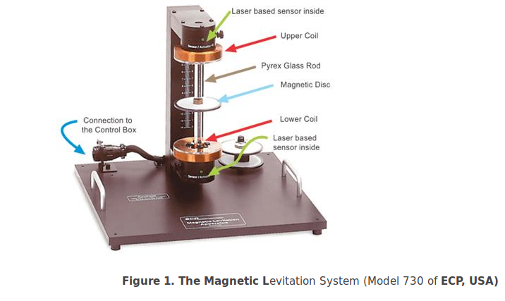
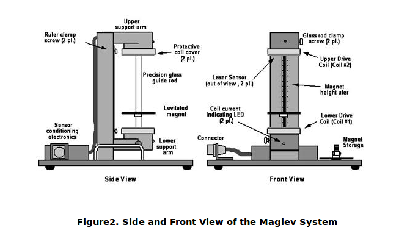
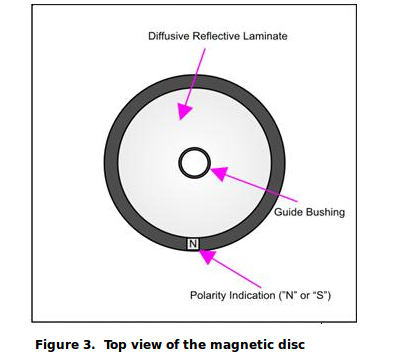
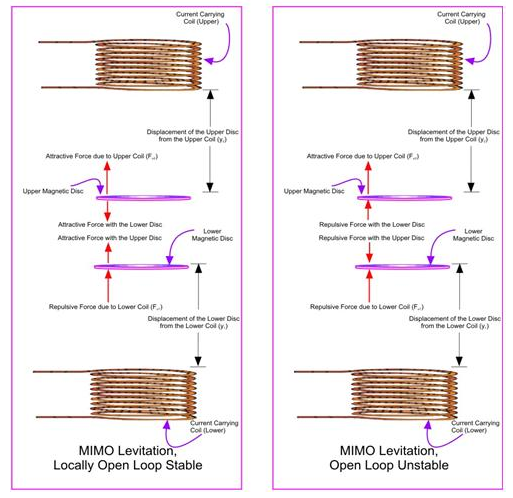
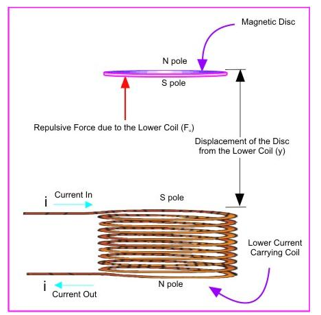
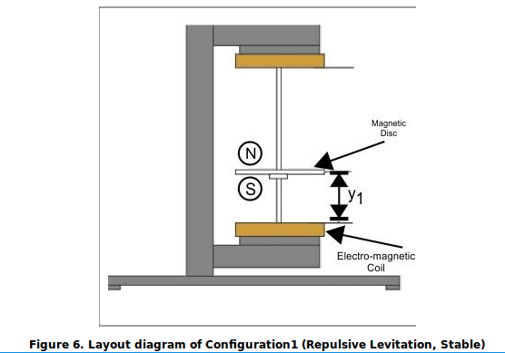
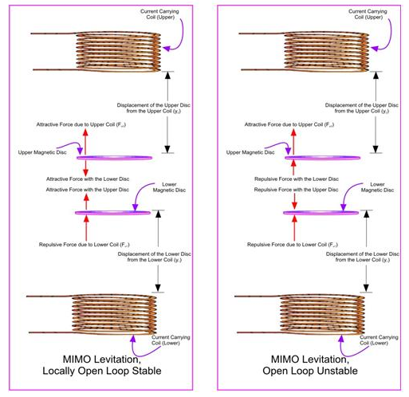
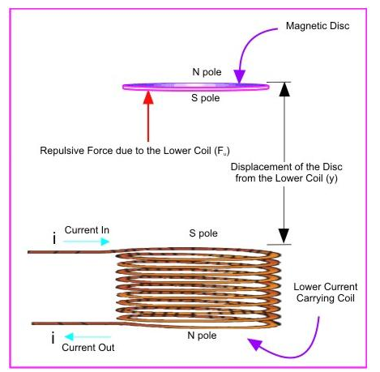
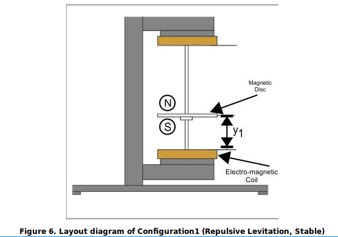

Magnetic Levitation
The Magnetic Levitation (Maglev) unit demonstrates closed loop levitation of permanent and ferromagnetic elements. The unit used for our experiments is shown in Figures 1 and 2, and the magnetic disc is shown in Figure 3.



The plant consists of upper and lower coils that produce a magnetic field in response to a DC current. A magnet (or sometimes even two magnets) travels along a glass guide rod. By energizing the lower coil, a single magnet is levitated through a repulsive magnetic force. As the current in the coil increases, the field strength increases and the levitated magnet height is increased. For the upper coil, the levitating force is attractive.
Up to two magnets may be controlled simultaneously by stacking them on the glass rod. The magnets are of ultra-high field strength and are designed to provide large levitated displacements to clearly demonstrate the principle of levitation and motion control. Two laser-based sensors measure the magnet positions. The lower sensor is typically used to measure a given magnet position in proximity to the lower coil, and the upper one for proximity to the upper coil.
The unit can be set up in the stable and unstable (repulsive and attractive fields) configurations. If two magnets and coils are used, the field interaction between the magnets causes strong cross coupling and thus produces a true multivariable system. Thus, magnets can be added or removed to provide single loop or multi-loop plants that are stable or unstable. These configurations are illustrated in Figure 4 below.
 
Most experiments deal with the so-called configuration1 shown in Figures 5 and 6. It is a configuration in which the lower magnet is levitated by exciting the lower electromagnetic coil. The excitation of the lower electromagnet causes the repulsive force on the magnetic disc. The repulsive force in turn levitates the magnetic disc. It is a stable configuration.



Most experiments deal with the so-called configuration1 shown in Figures 5 and 6. It is a configuration in which the lower magnet is levitated by exciting the lower electromagnetic coil. The excitation of the lower electromagnet causes the repulsive force on the magnetic disc. The repulsive force in turn levitates the magnetic disc. It is a stable configuration.



experiments
- 1.Plant Modeling
- 2.Transient Response
- 3.On-Off Control
- 4.P-Control
- 5.Frequency Response
- 6.PD Control for desired pole placement
- 7.PD Control for desired transient response
- 8. PID control for desired transient response
- 9. PD Control for desired transient response - Unstable Plant
- 10. PD Control for desired transient response - Unstable Plant
1. Visit all the tabs given on this website, especially visit the 'Introduction' tab, and read the overall description about Magnetic levitation. Also, see the list of experiments under 'List of experiments' tab.
2. You have to do the experiments in sequential order, that is first do experiment 1, then experiment 2, then experiment 3, and so on. Do not jump over to any experiment, without doing all the earlier experiments and submitting their results.
3. Now proceed to do the experiments, one by one.
4. For each experiment, you will find various tabs, such as: Aim, Introduction, Theory, Procedure, Experiment, Quiz, and Things to think about.
5. Begin by clicking on Experiment 1. Read the Aim, Introduction, Theory, and Procedure. Understand what is given in these topics, and become familiar with the procedure.
6. When you are ready to perform the experiment, click on the Experiment tab. Follow the procedure (as given under the previous tab).
7. Go to the Quiz section by clicking on the Quiz tab and answer all the quiz questions and press Submit.
8. Lastly, visit the section Things to Think About, by clicking on the tab. In this section, some advanced questions are given. You are to think over, discuss, and perform any additional experiments, to arrive at the answers. For this section, we do not provide the right answers. So, you have to figure them out yourself and get them evaluated by your instructor (if required).
Softwares
Please download and install the Runtime Engine on your computer before attempting for any of the given experiments .
Download Runtime Engine
Please note that you cannot perform any experiment without -
1. LabVIEW Runtime Engine.
2. Microsoft Excel.
3. C Drive in the local machine.
Steps for performing the experiments
Step_1 Download experiment file to your computer through link given below
Step_2 Unzip the downloaded file at your working directory.
Step_3 Run Maglev.exe file from the extracted folder.
Step_4 Follow the instructions given in 'Procedure' tab to perform the experiment
Link for downloading the Experiment file Download Experiment
The first Video shows the magnetic levitation system present in the Systems and Control Engineering Laboratory at IIT Bombay. Our simulation exerciseshave been designed based on this setup. The video shows the various subsystems, and demonstrates the levitation of the magnet. (acronyms used in the video: SISO is single input, single output, MISO is multi input multi output, SIMO is single input multi output, and MIMO is multi output multi output).
The second video shows various kinds of responses of the magnetic levitation system under PD control. We can see underdamped, overdamped, and critically damped responses of the maglev for different values of the PD parameters.(The PD values shown in the video may be different from the ones you calculate and use in the simulation exercises)
Books
1. K. J. Astrom and T. Hagglund, PID Controllers: Theory, Design, and Tuning, Second edition, ISA, New York, 1995. (ISBN-10:
1556175167).
2. K. J. Astrom and T. Hagglund, Advanced PID control, ISA, New York, 2006 (ISBN-10: 556179421).
3. J. J.D'Azzo and C. H. Houpis, Linear Control System Analysis and Design: Conventional and Modern, McGrawHill, Singapore, 1988.
4. B.V.Jayawant, Electromagnetic Levitation and Suspension Techniques, Edward Arnold Publishers, London, 1981.
5. J.D. Kraus, Electromagnetics, McGraw Hill, New York, 1992
6. N. S. Nise, Control Systems Engineering, Sixth Edition, John Wiley & Sons, 2010
v
7. E. Purcell,Electricity & Magnetism, McGraw-Hill, New York, 1965.
Reports
1. J.L. He, D.M. Rote, H.T. Coffey, Study of Japanese Electrodynamic Suspension Maglev Systems, Argonne National Lab, Argonne, IL,
60439, April 1994.
2. M.Proise, New York State Technical and Economic Maglev Evaluation,Grumman Space and Electronics Division, New York, June 1991.
Web Sites
1.,Descriptive link of Maglev technologies and basic physics
2.,RTRI Home page. Japanese EDS Maglev.
3.,Transrapid Official Homepage. German EMS Maglev.
4.,Mechanism of HSST. Japanese EMS.
5.,"Track to the Future" article. Descriptive article of one recent Maglev approach
6., "A New Approach to Levitating Trains - and Rockets." Elaboration of the previous link for a Maglev approach.
Us